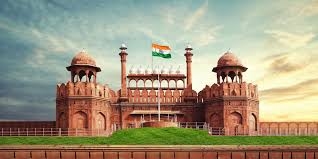
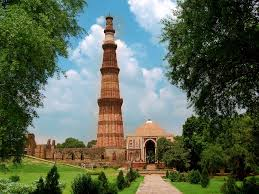
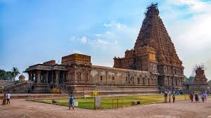
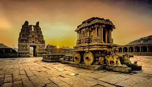
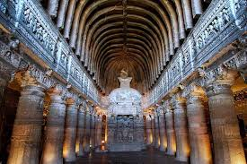
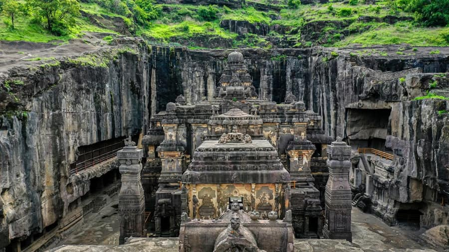
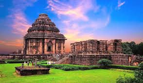

Wonders of India
UNESCO World Heritage Sites and architectural masterpieces

Taj Mahal
Agra, Uttar Pradesh | 1653 CE
An ivory-white marble mausoleum built by Mughal Emperor Shah Jahan in memory of his beloved wife Mumtaz Mahal. Considered one of the Seven Wonders of the World and a UNESCO World Heritage Site.

Red Fort
Delhi | 1648 CE
A historic fort that served as the main residence of Mughal emperors for nearly 200 years. Made of red sandstone, it's where India's Prime Minister hoists the national flag on Independence Day.

Qutub Minar
Delhi | 1193 CE
The tallest brick minaret in the world, standing at 73 meters. Built by Qutb-ud-din Aibak and later completed by Iltutmish, it showcases Indo-Islamic architecture with intricate carvings.

Brihadeeswara Temple
Thanjavur, Tamil Nadu | 1010 CE
Built by Raja Raja Chola I, this magnificent temple is dedicated to Lord Shiva. Its vimana (tower) is 66 meters tall and is an engineering marvel of the Chola period.

Hampi
Karnataka | 14th-16th Century
The ruins of Vijayanagara, the former capital of the Vijayanagara Empire. The site features stunning temples, palaces, and market streets spread across a surreal boulder-strewn landscape.

Ajanta Caves
Maharashtra | 2nd Century BCE - 6th Century CE
30 rock-cut Buddhist cave monuments featuring paintings and sculptures considered masterpieces of Buddhist religious art. The caves were abandoned and rediscovered in 1819.

Ellora Caves
Maharashtra | 6th-10th Century CE
34 caves representing Hindu, Buddhist, and Jain traditions. The Kailasa Temple (Cave 16) is a monolithic structure carved from a single rock, one of the largest of its kind in the world.

Konark Sun Temple
Odisha | 13th Century CE
Built in the shape of a gigantic chariot of the Sun God Surya, with elaborately carved stone wheels, pillars, and walls. A masterpiece of Kalinga architecture.